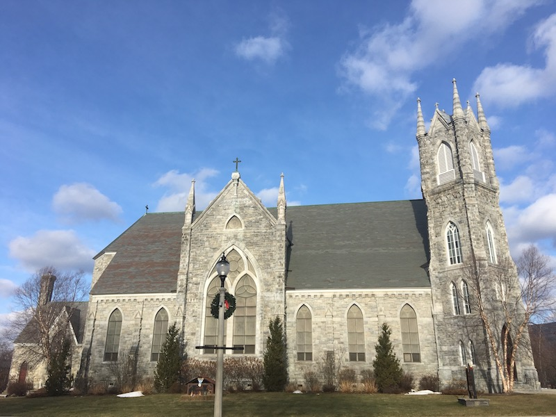
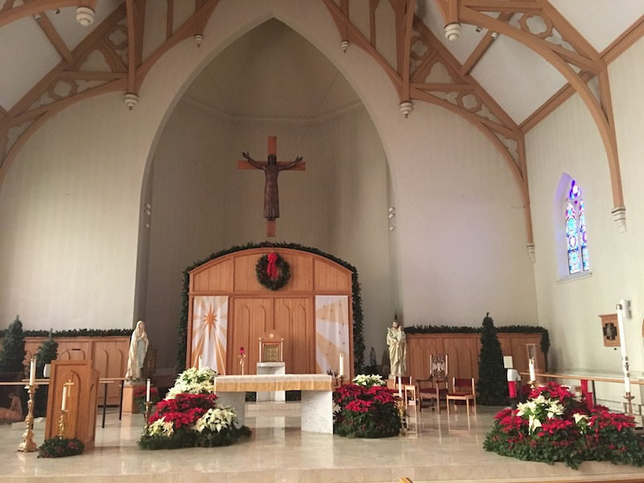
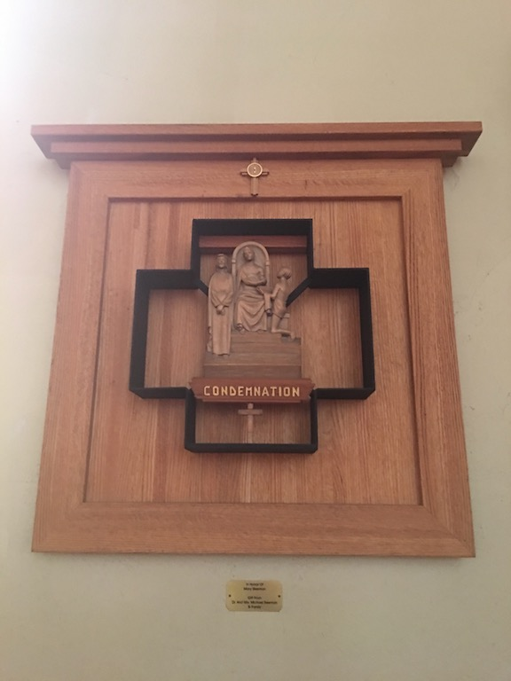
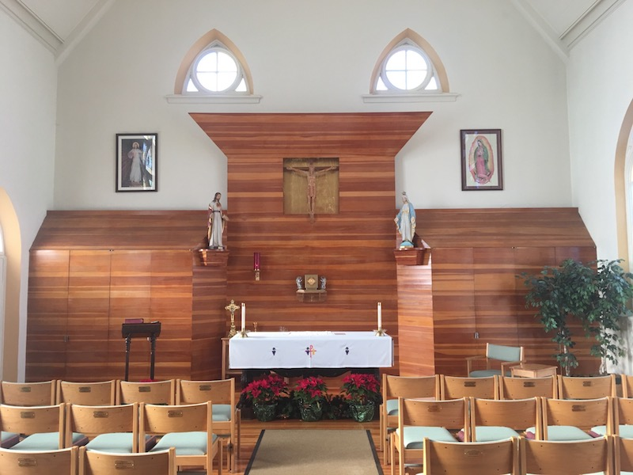

St. Francis de Sales Roman Catholic Church
Bennington, Vermont
After living for nearly two years in Bennington, Vermont, and walking past the local Roman Catholic Church many times, I finally went inside, on 5 January 2017, and took some photographs. I split them up into five sections. Click on an image or a link below to go to that section.
Outside | Sanctuary | Stained Glass | Stations of the Cross | Holy Cross Chapel
|
 Outside |
|
 Sanctuary |

Stained Glass |
|
 Stations of the Cross |
|
 Holy Cross Chapel |
Outside | Sanctuary | Stained Glass | Stations of the Cross | Holy Cross Chapel